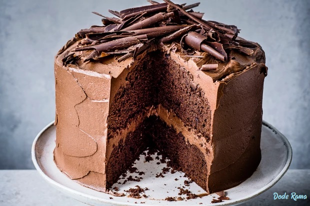

RESEP CHOCOLATE CAKE

|
OLEH:
I DEWA GEDE RAMA SATYA
(1708561004)
|
BAHAN
TAHAPAN
- Langkah pertama adalah menyiapkan semua bahan, lalu oles tipis loyang dengan margarin
- Kemudian beri alas kertas roti dan tutup panci kukusan dengan memberi alas serbet bersih
- Lelehkan DCC dengan cara medidihkan air dalam panci, lalu tuang DCC dalam wadah stainless steel dan aduk rata hingga coklat leleh
- Kocok telur, gula pasir, garam, dan vanila essen hingga mengembang putih pucat
- Masukkan tepung terigu, cokelat bubuk, baking soda, serta baking powder yang sudah diayak aduk rata
- Lalu, susu cair, minyak sayur, dan DCC yang sudah dilelehkan, aduk hingga rata ambil wadah untuk membagi adonan sama rata
- Langkah selanjutnya, tuang 1/2 adonan cokelat lalu kukus selama 15 menit
- Sambil menunggu adonan cokelat matang, kita buat adonan kuenya. Kocok cream cheese dan gula pasir hingga creamy, lalu masukkan telur dan kocok hingga rata
- Campurkan air, perasan lemon, dan tepung terigu tuang adonan kuenya diatas adonan cokelat yg sudah matang kukus selama 15 menit
- Tuang adonan kuenya diatas adonan cokelat yangg sudah matang dan kukus selama 15 menit
- Setelah itu masukkan sisa adonan cokelat kukus selama 20 menit
- Terakhir, setelah matang Chocolate Cake siap untuk disajikan.